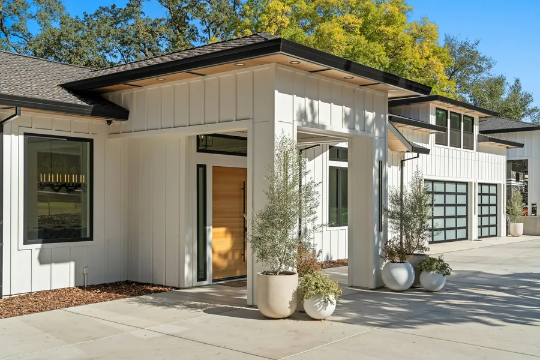
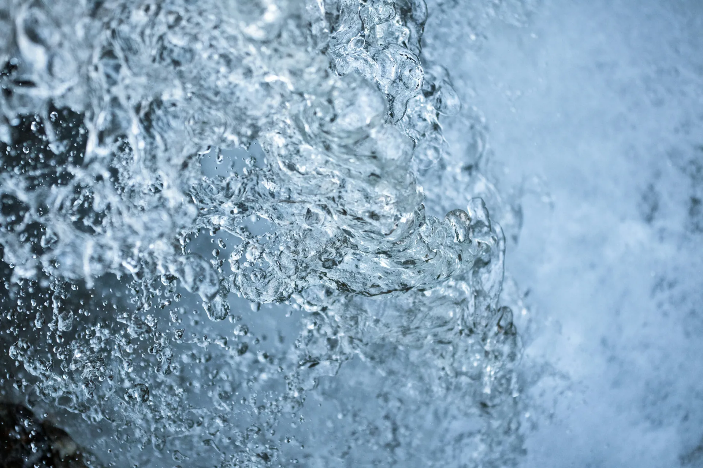
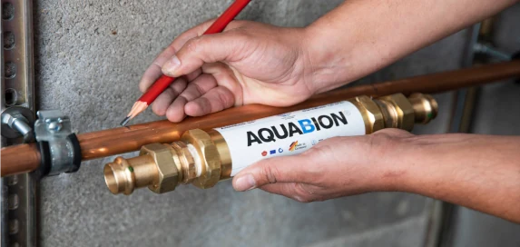
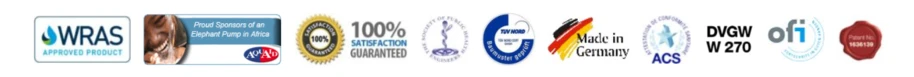
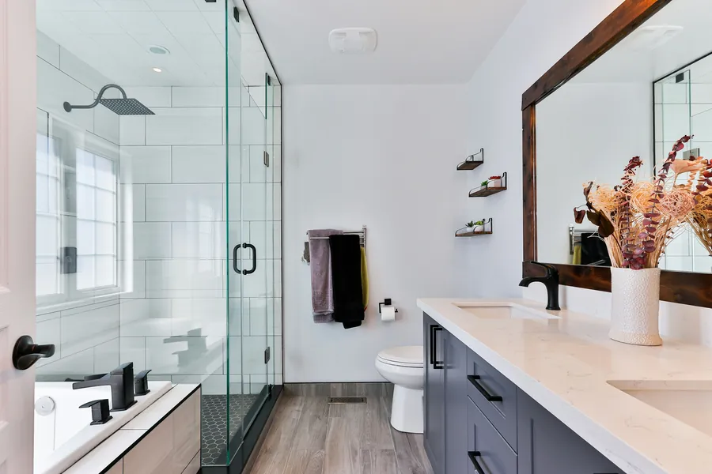
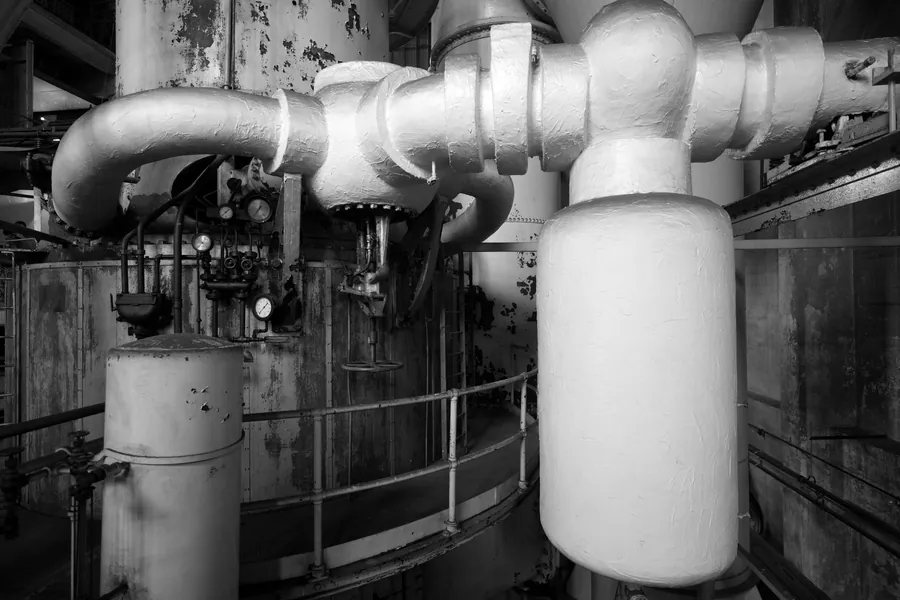
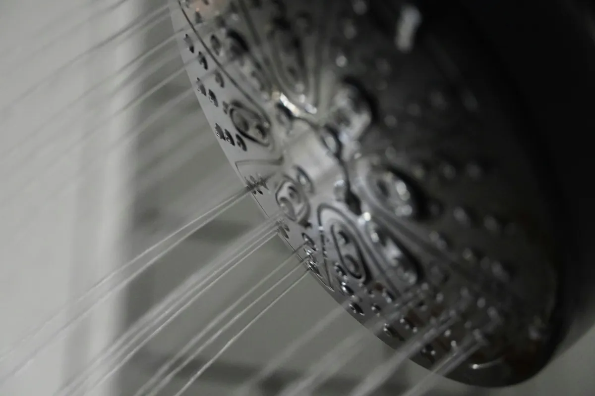
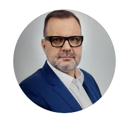

Domy jednorodzinne
Ochrona całej instalacji: kotła, bojlera, armatury i sprzętu AGD. Łatwiejsze utrzymanie czystości w łazience i kuchni.

Chroni rury, armaturę, sprzęt AGD i instalacje w firmie przed kamieniem i rdzą. Bez chemii, soli, prądu i magnesów, bez obsługi przez 5-8 lat.
Oficjalny dystrybutor w Polsce: RAM-Tech Marcin Fijałkowski, przedstawiciel austriackiej firmy Rabmer.
W porównaniu ze zmiękczaczem AQUABION niczego z wody nie usuwa i niczego do niej nie dodaje. Wapń i magnez zostają w wodzie, zmienia się tylko to, jak kamień zachowuje się w instalacji.

Komora ze stali nierdzewnej mocno zawirowuje wodę i doprowadza ją do cynkowej anody.
Wapń wytrąca się jako aragonit, który nie przykleja się do rur i grzałek, tylko wypływa z wodą.
Na wewnętrznej ściance tworzy się cienka patyna z cynkiem, która zatrzymuje dalszą korozję.
Urządzenie pracuje około 5-8 lat, zależnie od jakości i zużycia wody. Potem wymienia się je za 50% ceny.
Każdy milimetr osadu w rurze to nawet 10% strat ciepła w grzejnikach. Zalegający kamień i korozja wżerowa kończą się pękniętymi rurami, spadkiem ciśnienia i czyszczeniem wymienników.

Atest wody pitnej PZH, certyfikaty europejskie, technologia z Niemiec i Austrii.
Od jednego domu po hotel i halę produkcyjną. Dobieramy wielkość urządzenia do przepływu w instalacji.

Ochrona całej instalacji: kotła, bojlera, armatury i sprzętu AGD. Łatwiejsze utrzymanie czystości w łazience i kuchni.

Mniej pracy przy czyszczeniu armatury, pokoi i łazienek. Realna oszczędność dla właścicieli i wspólnot mieszkaniowych.

Wymienniki ciepła, pompy i maszyny bez osadów. Krótsze przestoje na czyszczenie i mniejsze ryzyko wymiany instalacji.
Całkowity koszt zakupu i eksploatacji AQUABION jest co najmniej o 40% niższy niż przy konwencjonalnych systemach odkamieniania.

Mała zwężka montowana przed wężem prysznicowym zawirowuje wodę. Strumień jest pełny, a zużycie wody i energii do jej podgrzania spada o 30-50%, zależnie od ciśnienia i słuchawki. Wirująca woda przy okazji czyści wąż i słuchawkę z osadów.
Nie ma tu Państwa pytania? Proszę zadzwonić albo napisać, odpowiem konkretnie dla Państwa instalacji.
Nie. Urządzenie nie zmienia składu wody, więc wapń i magnez zostają. Smak i jakość wody pitnej są takie same jak przed montażem.
Zmiękczacz wymienia jony i trzeba do niego dokupować sól. AQUABION działa na zasadzie cynkowej anody protektorowej: nie potrzebuje chemii, soli, prądu ani magnesów i nie wymaga obsługi.
Tak. Większe cząstki aragonitu delikatnie wymywają luźne osady rdzy, a na ściance rury powstaje patyna z cynkiem, która zatrzymuje dalszą korozję. Brązowa woda z rdzawej instalacji zwykle znika po 2-3 miesiącach.
Działanie cynkowych anod badały m.in. Uniwersytet w Marburgu, Cranfield University, Uniwersytet w Rostocku i instytut IWW. Dokumenty prześlemy na prośbę.
Wystarczy podać średnicę rury przy wodomierzu i rodzaj budynku. Odpowiemy, który model pasuje do Państwa instalacji.
Szukamy partnerów, którzy zajmą się dostawą, montażem i obsługą klientów w swojej okolicy. AQUABION to prosta w montażu alternatywa dla zmiękczaczy, także przy remontach instalacji.
Napisz, jaki to budynek i jaka jest średnica rury przy wodomierzu. Odpowiem z doborem urządzenia i ceną.
